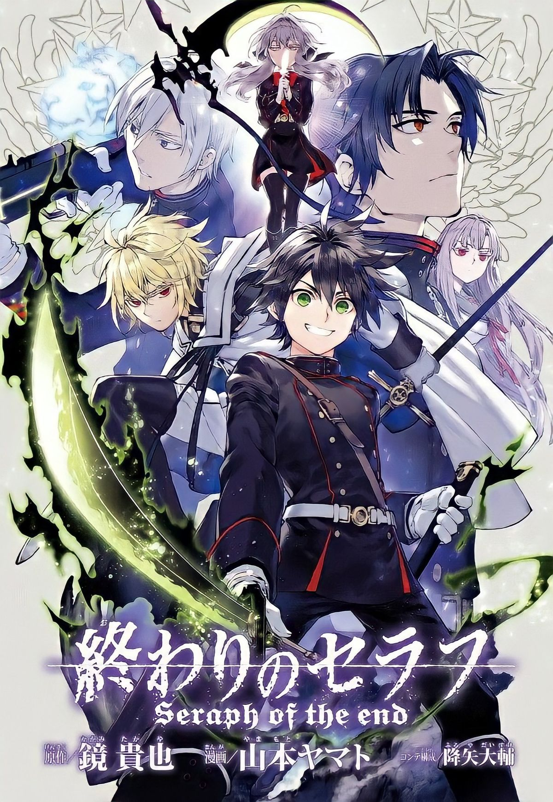

Seraph of the end
Thể loại: Hành động, Phiêu lưu, Kỳ ảo
Mô tả:
Vào ngày nọ, một loại vi rút bí ẩn lan rộng toàn cầu và lây nhiễm cho tất cả những ai hơn 13 tuổi, đưa họ tới cái chết. Cùng lúc đó, Vampire xuất hiện, đưa Trái Đất vào bóng tối và con người bị bắt làm nô lệ. Hyakuya Yuuichirou, một cậu bé sống tại trại trẻ mồ côi đã trốn thoát khỏi nơi giam giữ của bọn Vampire. Với quyết tâm giết tất cả bọn Vampire để trả thù cho gia đình đã bị giết hại của mình, cậu tham gia vào đội Nguyệt Quỷ. Nhưng những thứ xảy ra đôi lúc không như người ta mong chờ, Michaela, người bạn thuở nhỏ của cậu đã trở thành Vampire…..
Tóm tắt cốt truyện:
Bối cảnh diễn ra trong một thế giới hậu tận thế, nơi một loại virus bí ẩn quét sạch gần
như toàn bộ loài người trưởng thành. Sau thảm họa, ma cà rồng xuất hiện, thống trị những
thành phố còn sót lại và nuôi con người như gia súc.
Nhân vật chính là Hyakuya Yuuichirou, một cậu bé mồ côi bị ma cà rồng giam giữ cùng
những đứa trẻ khác. Sau một biến cố bi thảm, Yuuichirou trốn thoát và thề sẽ tiêu diệt
toàn bộ ma cà rồng.
Nhiều năm sau, Yuu gia nhập Quân đội Quỷ Diệt Nhật Bản, một tổ chức của loài người
chuyên chiến đấu chống lại ma cà rồng bằng:
Vũ khí quỷ (Cursed Gear) vũ khí chứa linh hồn quỷ
Sức mạnh đến từ ý chí, cảm xúc và sự kiểm soát bản thân
Trong quá trình chiến đấu, Yuu gặp lại Hyakuya Mikaela, người bạn thân tưởng đã chết
nhưng nay lại trở thành ma cà rồng. Từ đây, câu chuyện không chỉ còn là cuộc chiến người
ma cà rồng, mà mở ra:
Âm mưu của các tổ chức con người
Bí mật về Seraph, thí nghiệm cấm kỵ và nguồn gốc virus
Xung đột giữa tình bạn, thù hận và số phận
Bình luận
Vui lòng đăng nhập để bình luận.